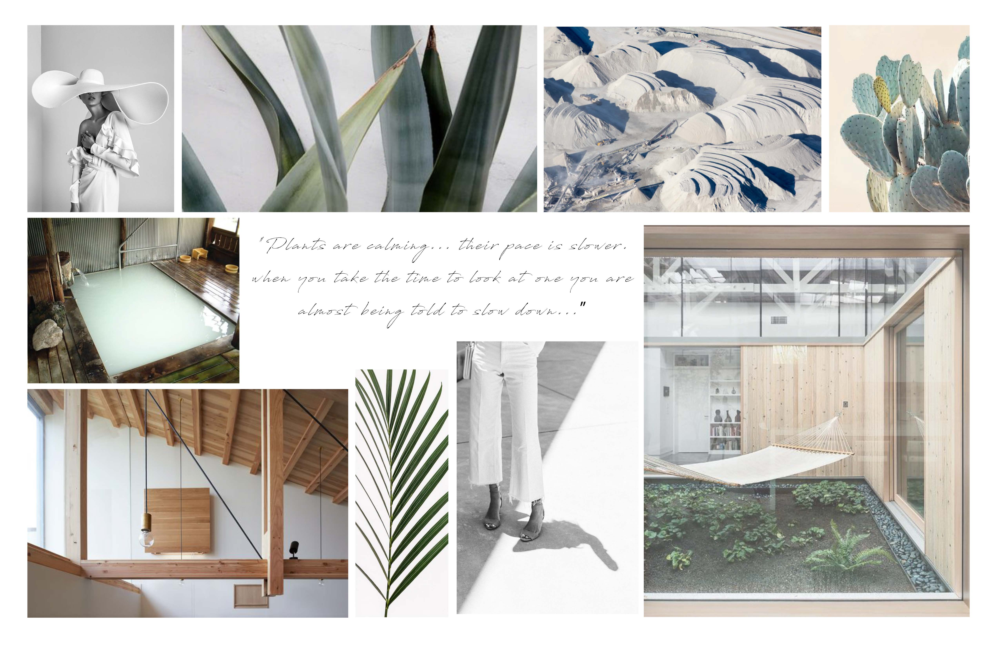
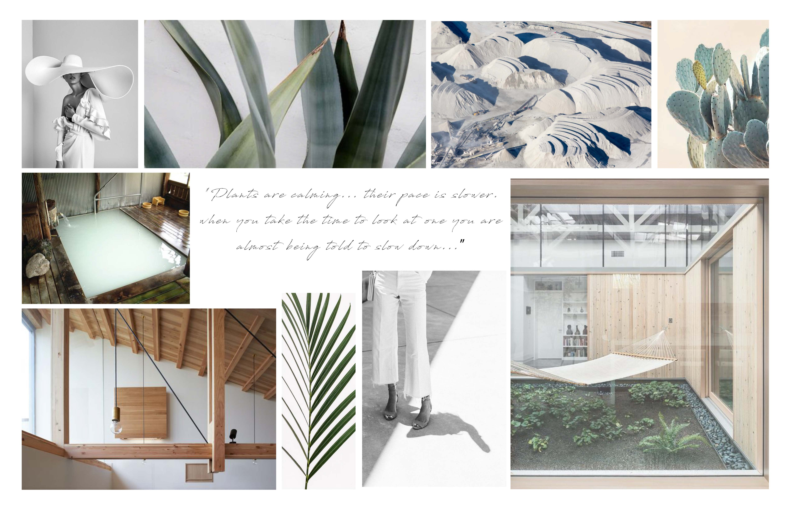
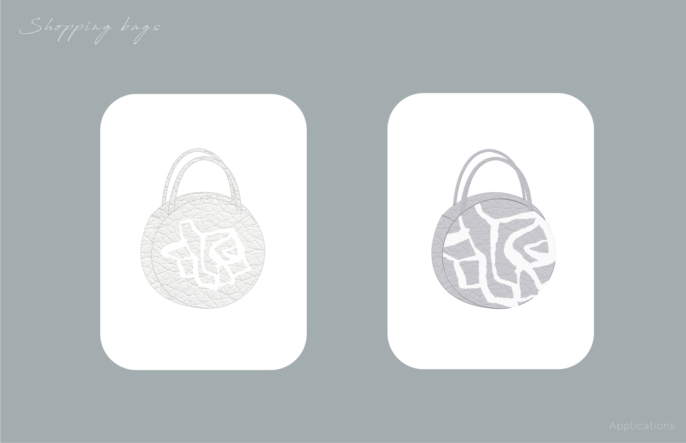
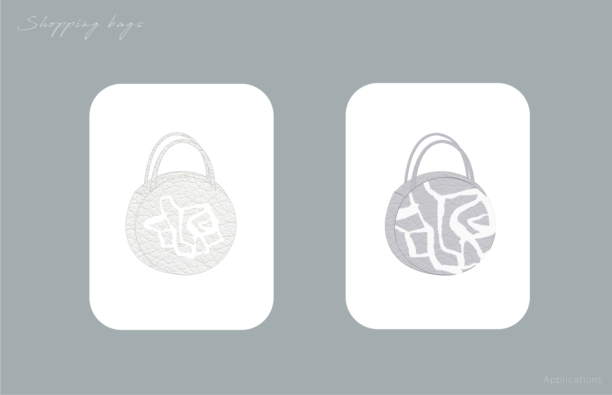

BACK
PLANTS AS INSPIRATION / BRANDING
PARSONS SCHOOL OF DESIGN / SOPHOMORE YEAR / 2 WEEK PROJECT
This is the branding for a fashion brand's collection inspired by and as a result of a visual research book that I created for another project.
Valentina M is a clothing brand that embraces natural materials, soft and structured textures, as well as sustainable practices. Our existence was inspired by plants: how they move, how their silhouettes are created by different amounts of volume, how the light hits them and sometimes shines through them to create new forms and dimensions. We are inspired by plants' lightness, yet density, and their way of living. They are calm yet demand balance to maintain their serenity. We embrace their singularity and uniqueness, as well as how natural environments exist as a whole, how they appear as a collage, ready to be rearranged and put together. Our aim is to reflect and translate our passion for plants into natural sustainable clothing that bring you comfort and confidence, and demand to be lived in with serenity.
 



 
